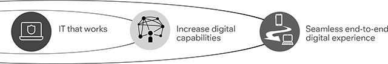

Strategic themes
One team. One University. One IT plan.
Welcome to University of Plymouth’s IT Road Map. Developed with key stakeholders. A rolling plan driven by our academic mission.
- Apply the technologies, processes, practices and culture of the digital age.
- Create and operate joined-up digital services for learning, teaching and research.
- Work as one team to meet increased student expectations in a digital world.
Together, we will become a thriving digital University.
